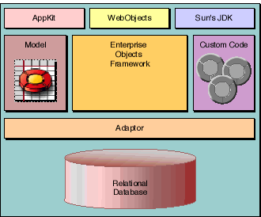

Figure 6. The Ingredients of an Enterprise Objects Framework Application
Table of Contents Next Section
 Table of Contents
Table of Contents  Next Section
Table of Contents
Next Section
Table of Contents  Previous Section
Table of Contents Next Section
Previous Section
Table of Contents Next Section